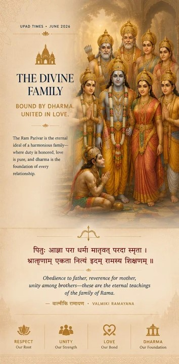

The Seven Sacred Cities
Where Simply Being Grants Liberation
There are seven sacred cities in India where simply leaving one's body within their boundaries is believed to grant moksha — liberation from the cycle of rebirth. Ayodhya is one of them.
But unlike Varanasi with its eternal cremation ghats, or Haridwar during the immense gatherings of the Kumbh Mela, Ayodhya has always been quieter about its claim to eternity. The city does not announce itself loudly. It simply exists — calm, watchful, and deeply woven into the spiritual memory of Bharat.
The other cities of the Sapta Puri each carry their own sacred identity. Mathura evokes the playful divinity of Krishna. Haridwar marks the descent of the Ganga from the Himalayas. Kashi belongs to Shiva and the mystery of death and liberation. Kanchipuram rises through its ancient temples in the South. Ujjain gathers millions during the Kumbh Mela. Dwarka carries the memory of Krishna's legendary kingdom by the sea.
But Ayodhya is different.
Ayodhya is where Rama walked.
And for countless generations, that alone has been enough.
Seventy-Six Steps to Devotion
Why Hanuman Garhi Comes First
There is a ritual in Ayodhya that every pilgrim learns quickly: before you visit the Ram Mandir, you climb seventy-six steps to Hanuman Garhi. It's not optional. It's not folklore. It is what people do. The hilltop temple dedicated to Hanuman sits above the city, and local tradition holds that Hanuman still stands guard over Ayodhya, watching over Rama the way he did through the exile and the war in Lanka.
The seventy-six steps aren't just a climb. They're preparation. By the time you reach the top—breathing hard, legs burning—something has shifted. The noise of the city fades. The urgency that brought you here quiets down. You're no longer rushing to check off a pilgrimage site. You're present. And that presence is the point.
Hanuman represents devotion without ego, service without expectation. He could have demanded recognition for everything he did—leaping to Lanka, finding Sita, saving Lakshmana's life. Instead, he chose to remain Rama's servant forever. The tradition of visiting Hanuman first teaches a simple lesson: if you're coming to Ayodhya expecting Rama to grant your wishes, you've misunderstood the relationship. Rama isn't a cosmic vending machine. He's the embodiment of dharma. And dharma doesn't transact. It transforms.
By the time you reach the top — breathing hard, legs burning — something has shifted. The noise of the city fades. The urgency that brought you here quiets down. You're present. And that presence is the point.
The Avatar Circuit
Six Cities Connected by Divine Descent
Ayodhya sits at the center of what might be called an eternal sacred geography — a network of cities woven together through the memory of divine descent. Westward lies Mathura, birthplace of Krishna. In Bihar stands Gaya, where the Buddha attained enlightenment beneath the Bodhi tree. Northward rises Haridwar, where the Ganga descends from the Himalayas. Along the eastern coast stands Puri, where Jagannath continues Krishna's presence through one of India's oldest living temple traditions.
For many devotees of Sita, the pilgrimage continues eastward to Sitamarhi in Bihar, where King Janaka is believed to have found her as an infant while plowing a field. For those who revere Sita not only as Rama's companion but as a divine presence in her own right, Sitamarhi becomes part of the larger spiritual journey — completing the arc from her earthly arrival to the life she would later share with Rama in Ayodhya.
The Rituals That Never Stopped

The Divine Family · Bound by Dharma. United in Love.
Every evening, hundreds gather at the Sarayu River ghats for aarti. Oil lamps are lit. Prayers are chanted. The river, which has flowed through this landscape for millennia, receives the same offerings it received when Rama bathed in it. During Deepotsav—Diwali in Ayodhya—the entire city lights millions of earthen lamps. The spectacle is visible from space. It's not a tourist event. It's what Ayodhya does, what it has always done.
Culture here is not something preserved in museums or performed for audiences. It's what people do when no one is watching, because it's what their grandparents did, and their grandparents before them, stretching back through time to Rama himself. You don't come to Ayodhya to see culture. You come to participate in it.